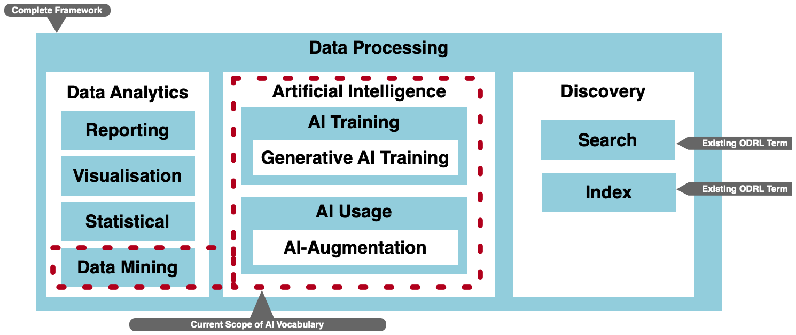

This ODRL Profile defines AI-specific actions which enables policy authors to clearly define acceptable and prohibited uses of assets in AI workflows. It supports governance, risk management, and compliance efforts, helping ensure that AI systems operate within agreed legal, ethical, and contractual boundaries.
Feedback is welcome on all aspects of this working draft.
This ODRL Profile defines a controlled vocabulary of actions governing the use of assets by Artificial Intelligence (AI) systems. As AI technologies increasingly interact with digital and physical assets—through training, inference, transformation, and decision-making—there is a need for precise, machine-readable policies that express permissions, prohibitions, and obligations specific to AI-driven activities.
This ODRL Profile addresses this gap by defining a set of actions tailored to AI systems. These include permissions and prohibitions related to training models, generating outputs, modifying assets, and redistributing AI-derived content. By enabling explicit and machine-readable policy statements, this profile supports responsible AI practices and facilitates enforcement of organisational, legal, and societal expectations, such as supporting technical measures to address the European Artificial Intelligence Regulations [[?EU-AI-Act]]
The Profile URI for this vocabulary is defined as:
| ODRL Profile | AI Vocabulary | https://w3c.github.io/odrl/ai-vocab/ |
Within this document, the following namespace prefix bindings are used:
| Prefix | Namespace | Definition |
|---|---|---|
| odrl | http://www.w3.org/ns/odrl/2/ | [[!odrl-model]] [[!odrl-vocab]] |
This Profile uses wording according to [[!RFC2119]].
Numerous standards groups and other projects have developed vocabularies for "opt-out" of AI processes over user content. An analysis has found them to be divergent, fragmented, and imbalanced and also provides a detailed summary of these vocabulary options.
Below is a summary of the key proposals.
IETF - AI Preferences [[?draft-ietf-aipref-vocab]]
Creator Assertions Working Group (CAWG) - Training and Data Mining Assertion [[?cwag-train]]
PLUS License Data Format - Data Mining [[?plus-data-mining]]
Really Simple Licensing (RSL) - AI Usage [[?rsl-ai]]
NOTE: Search and Index in the above systems typically are general concepts and not specific to "AI systems".
The TDM Reservation Protocol [[?TDM-Res]] defines a simple protocol capable of expressing the reservation of rights relative to text & data mining (TDM) applied to Web content, and to ease the discovery of TDM licensing policies associated with such content. The specification already uses the W3C ODRL 2.2 Policy Language, and only explicitly defines this vocabulary term:
As can be clearly seen by these existing approaches in Section 3, they vary in consistency in their model and semantics, and hence will dilute data interoperability for AI governance across the Web and Enterprise.
Using the current set of AI vocabularies described in Section 3 as a snapshot of the AI community requirements, the ODRL AI Vocabulary Profile takes a more bigger-picture view by providing an extensible Data Processing framework that captures current state needs, as well as sets the platform for future growth. The figure below shows the framework and current scope of the AI vocabulary, including their hierarchy in the framework.

The current scope of the AI Vocabulary consists of six new terms and includes two existing ODRL Vocabualry terms. The new terms also represent a hierarchy, enabling ODRL policies to more simply include the inherited terms. The terms are summarised here:
NOTE: Data Mining is not considered as the parent term in this framework, as that is not the industry consensus.
The next sections formally defines these vocabulary terms.
| Definition: | The act of using asset(s) with computational systems capable of performing artificial intelligence tasks |
|---|---|
| Label: | Artificial Intelligence (AI) |
| Identifier: | http://www.w3.org/ns/odrl/2/ai |
| Note: | Artificial Intelligence encompasses a broad range of techniques and systems, including machine learning, deep learning, and generative AI systems. |
| Included In: | Use |
| Class: | Action |
| Mapping: |
This vocabulary term has similar semantics to:
|
| Definition: | The act of using asset(s) to modify the parameters, internal representations, or learned behaviour of an artificial intelligence model or system to enable or improve its performance |
|---|---|
| Label: | AI Training |
| Identifier: | http://www.w3.org/ns/odrl/2/ai-training |
| Note: | AI Training includes initial model training, continued pre-training, fine-tuning, and other training processes that modify a model based on data |
| Included In: | Artificial Intelligence (AI) |
| Class: | Action |
| Mapping: |
This vocabulary term has similar semantics to:
|
| Definition: | The act of using asset(s) to train or modify a generative artificial intelligence model so that it can generate new content, including text, images, audio, video, software code, or other forms of output |
|---|---|
| Label: | Generative AI Training |
| Identifier: | http://www.w3.org/ns/odrl/2/ai-train-gen |
| Note: | Generative AI Training includes initial training, continued pre-training, fine-tuning, and other training processes that modify a generative AI model |
| Included In: | AI Training |
| Class: | Action |
| Mapping: |
This vocabulary term has similar semantics to:
|
| Definition: | The act of using asset(s) to an artificial intelligence system to perform a task or obtain an output, without necessarily modifying the system’s learned model parameters |
|---|---|
| Label: | AI Usage |
| Identifier: | http://www.w3.org/ns/odrl/2/ai-usage |
| Note: | AI Usage includes activities such as prediction, classification, summarisation, question answering, content generation, and decision support by providing information to an AI system |
| Included In: | Artificial Intelligence (AI) |
| Class: | Action |
| Mapping: |
This vocabulary term has similar semantics to:
|
| Definition: | The act of using asset(s) as input to pre-trained AI models to assist, enhance, or extend their capabilities in performing a task, while retaining involvement in evaluating, directing, or acting upon the resulting output |
|---|---|
| Label: | ai-augment |
| Identifier: | http://www.w3.org/ns/odrl/2/ai-augment |
| Note: | AI Augmentation includes activities in which AI supports human or computational capabilities, such as assisting with research, improving decision-making, generating recommendations, supporting software development, or enhancing creative work. NOTE: This term is sometimes referred to as inference. |
| Included In: | AI Usage |
| Class: | Action |
| Mapping: |
This vocabulary term has similar semantics to:
|
| Definition: | The act of using asset(s) in analysing or computationally processing data to identify, extract, or derive patterns, relationships, trends, correlations, structures, or other information that may not be explicitly represented in the original data |
|---|---|
| Label: | data-mining |
| Identifier: | http://www.w3.org/ns/odrl/2/data-mining |
| Note: | Data Mining may involve statistical analysis, pattern recognition, clustering, association analysis, or other computational techniques |
| Included In: | Use |
| Class: | Action |
| Mapping: |
This vocabulary term has similar semantics to:
|
| Definition: | The act of enabling the asset(s) to be discoverable in a data store |
|---|---|
| Label: | Search |
| Identifier: | http://www.w3.org/ns/odrl/2/search |
| Note: | |
| Included In: | Use |
| Class: | Action |
| Mapping: |
This vocabulary term has similar semantics to:
|
| Definition: | The act of enabling the asset(s) to be recorded in the index of a data store |
|---|---|
| Label: | Index |
| Identifier: | http://www.w3.org/ns/odrl/2/index |
| Note: | For example, to include a link to the Asset in a search engine database after the Asset has been processed by an algorithm. This term is the same as defined in the ODRL Common Vocabulary. |
| Included In: | Use |
| Class: | Action |
| Mapping: |
This vocabulary term has similar semantics to:
|
The asset (dataset1) maybe used for AI Training only (which will include Gen AI Training)for the explicit purpose of "Research and Development"
{
"@context": "http://www.w3.org/ns/odrl.jsonld",
"@type": "odrl:Set",
"profile": "https://w3c.github.io/odrl/ai-vocab/",
"uid": "http://example.org/policy/001",
"target": "http://example.org/asset/dataset1",
"permission": [{
"action": "odrl:ai-training",
"constraint": [{
"leftOperand": "odrl:purpose",
"operator": "odrl:eq",
"rightOperand": "https://w3id.org/dpv#ResearchAndDevelopment"
}]
}]
}
The asset (dataset2) maybe used for Data Mining, AI Usage, Search, and Index but must not be used for AI Usage.
{
"@context": "http://www.w3.org/ns/odrl.jsonld",
"@type": "odrl:Set",
"profile": "https://w3c.github.io/odrl/ai-vocab/",
"uid": "http://example.org/policy/002",
"target": "http://example.org/asset/dataset2",
"permission": [{
"action": "odrl:data-mining",
"action": "odrl:search",
"action": "odrl:index",
}],
"prohibition": [{
"action": "odrl:ai-usage"
}]
}
The asset (dataset3) maybe used for all Artificial Intelligence actions in Europe, but must not be used for AI Augmentation in Italy.
Note that the conflict property is set to prohibit to ensure that "AI Augmentation" is overridden in the "Artificial Intelligence" action hierarchy.
{
"@context": "http://www.w3.org/ns/odrl.jsonld",
"@type": "odrl:Set",
"profile": "https://w3c.github.io/odrl/ai-vocab/",
"uid": "http://example.org/policy/003",
"conflict": "prohibit",
"target": "http://example.org/asset/dataset2",
"permission": [{
"action": "odrl:ai",
"constraint": [{
"leftOperand": "spatial",
"operator": "eq",
"rightOperand": "https://www.wikidata.org/wiki/Q46" ## Europe
}],
"prohibition": [{
"action": "odrl:ai-augment",
"constraint": [{
"leftOperand": "spatial",
"operator": "eq",
"rightOperand": "https://www.wikidata.org/wiki/Q38" ## Italy
}]
}